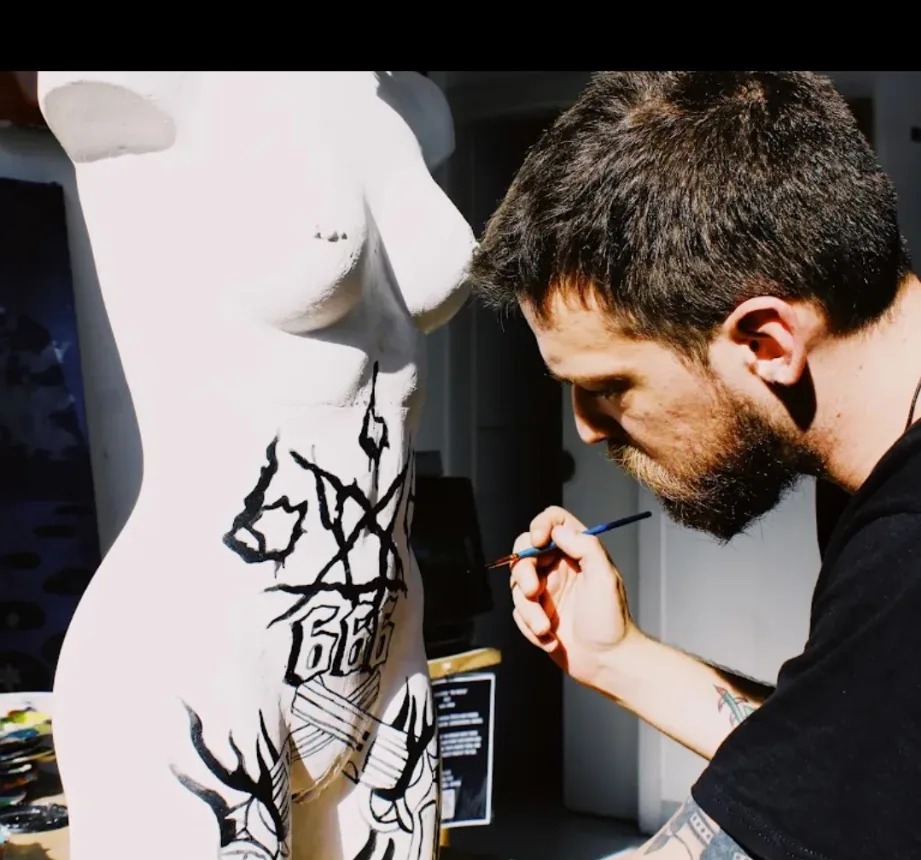
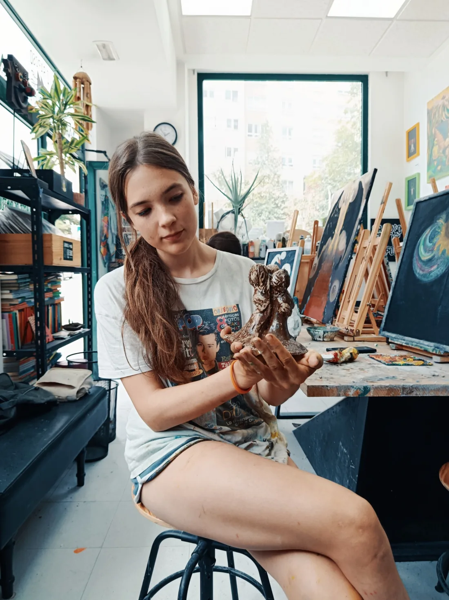
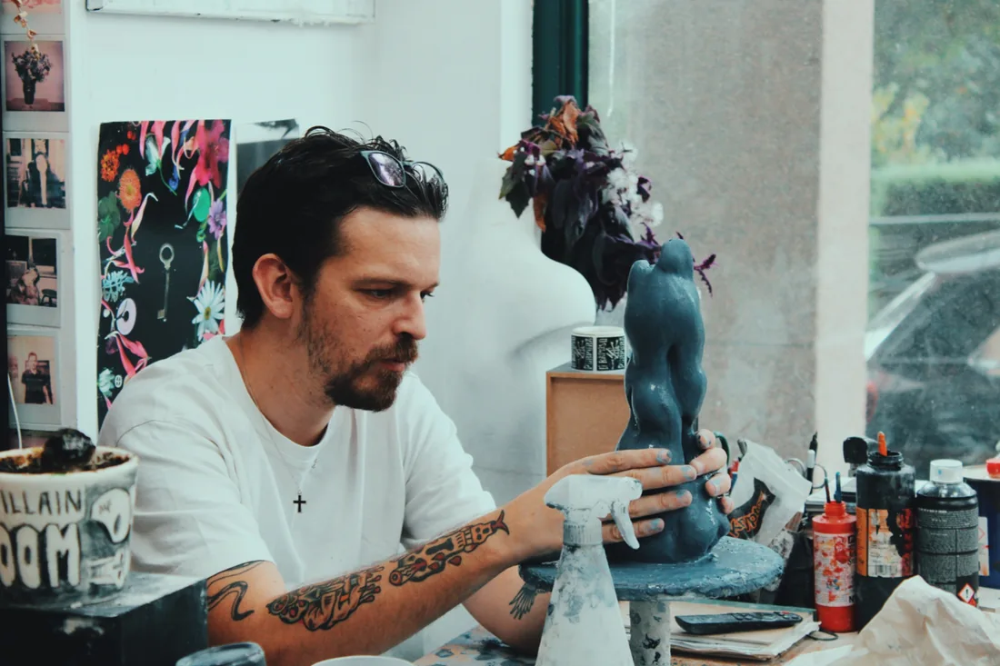
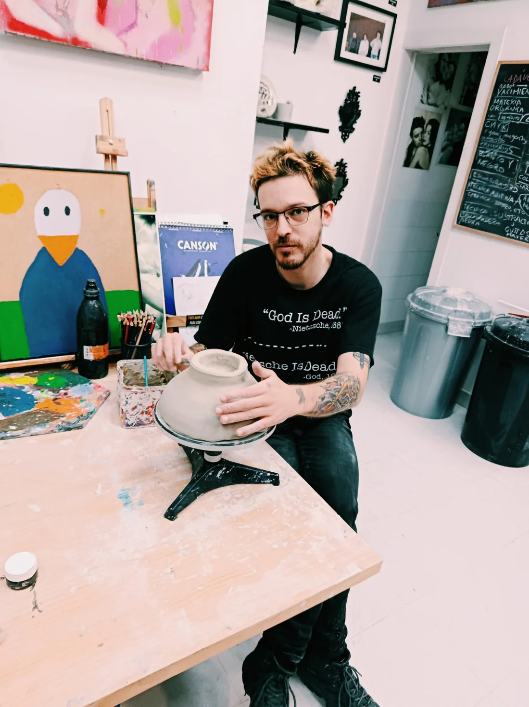
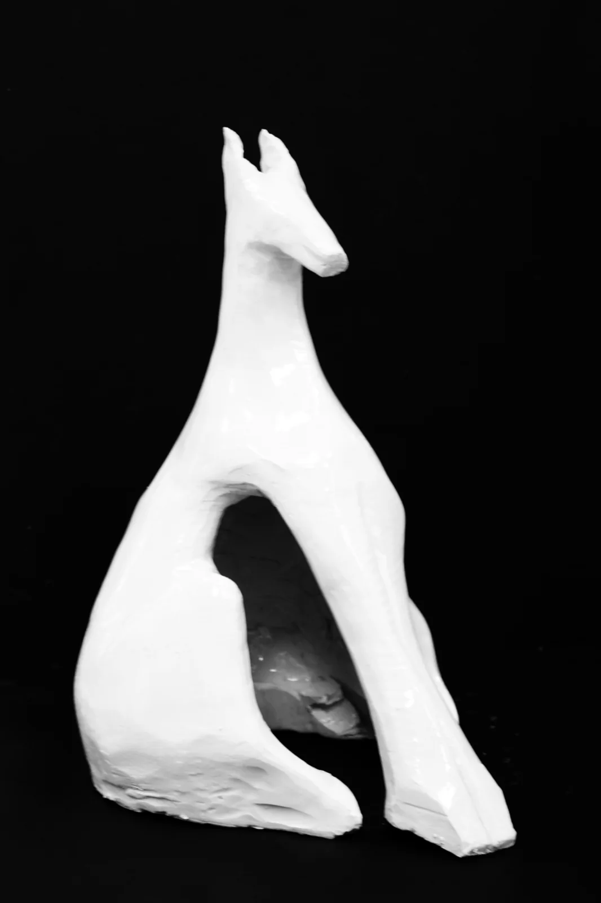
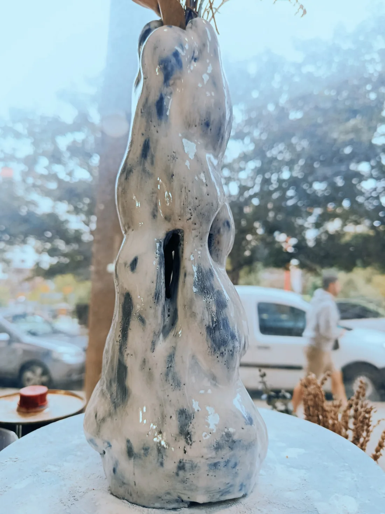
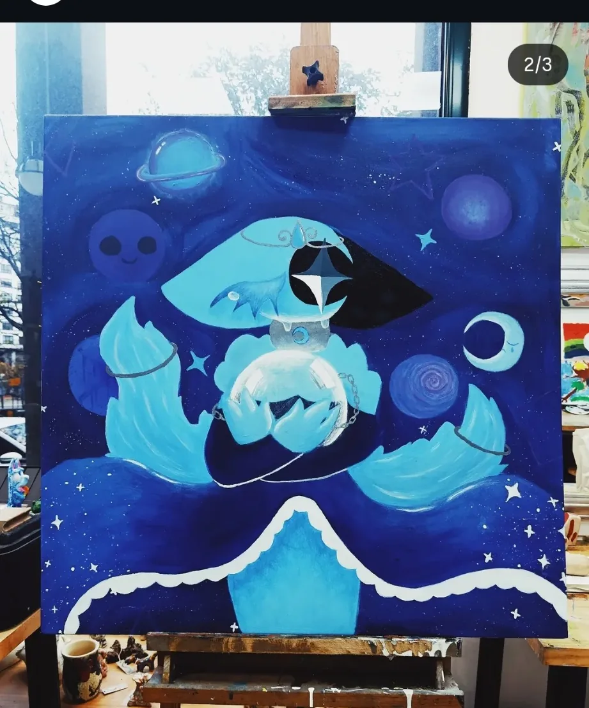
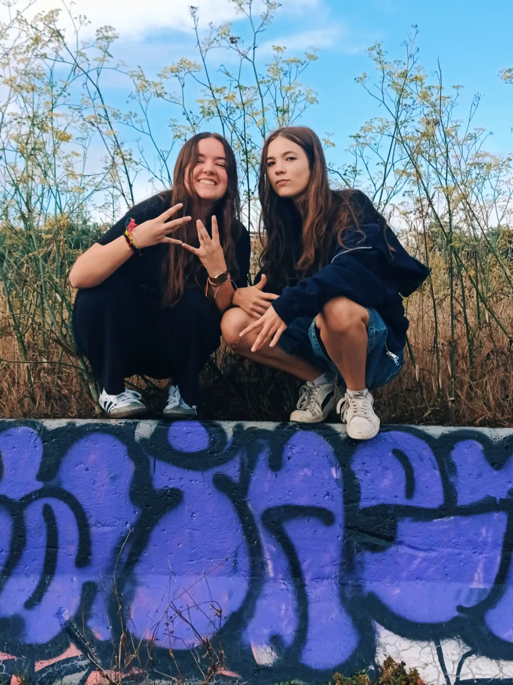
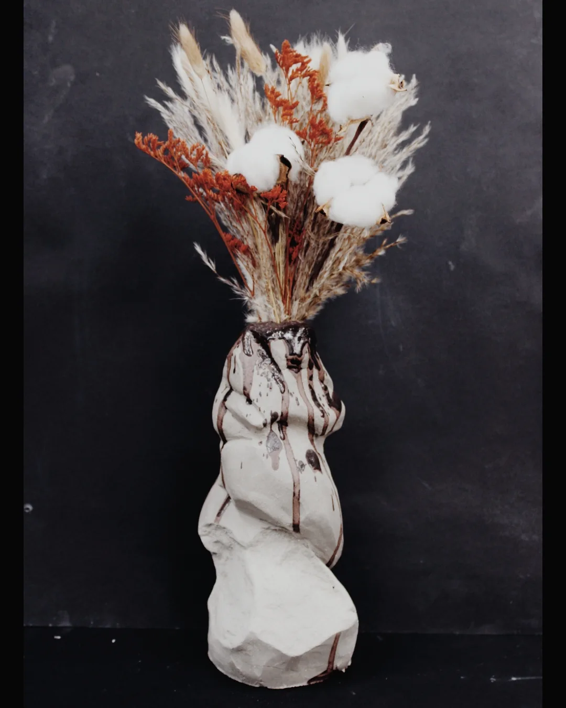

Pintar, modelar,
compartir.
O Raposo Púrpura es un taller de pintura y cerámica abierto al público. Un lugar para experimentar, charlar, aprender y disfrutar del proceso creativo, tengas o no experiencia previa.

Pintura, cerámica y compañía
Un espacio abierto para crear, aprender y compartir un buen rato. Puedes elegir pintura o cerámica, aunque nunca hayas practicado antes.
Tu proyecto comienza aquí
Eliges pintura o cerámica y desarrollas un proyecto propio, a tu ritmo. Nacho te acompaña paso a paso: te enseña técnicas, resuelve tus dudas y te ayuda a llevar tu idea a buen puerto. No necesitas experiencia previa.
También es un lugar para desconectar, conversar y compartir tiempo con otras personas.
Conoce al profesor

Instagram: @artimelina ↗
Nacho Martínez
Artista visual · Cerámica e ilustración · Docencia artística. Autónomo y responsable de O Raposo Púrpura, en A Coruña.
Soy quien acompaña personalmente a los alumnos del taller. Cada persona puede elegir pintura o cerámica, desarrollar una idea propia y avanzar a su ritmo, con orientación técnica y ayuda durante todo el proceso.
Consultar formación y trayectoria completa
Experiencia profesional
O Raposo Púrpura — Dirección y docencia artística desde septiembre de 2022.
Restauración de arte — Santa Cristina, A Coruña · marzo–septiembre de 2014.
Formación
Cerámica, EASD Pablo Picasso (2020–2022). Escultura y forja artística, EASD Pablo Picasso (2014–2016). Estudios de Bellas Artes, Pontevedra (2012–2014; no finalizados). Iniciación al Arte Contemporáneo, Fundación Luis Seoane (2011–2012). Bachillerato Artístico, IES Adormideras (2007–2011).
Formación complementaria
Cabaret Místico y taller social con Alejandro Jodorowsky. Teatro Colón, A Coruña · 5 y 6 de febrero de 2016.
Horarios de las clases
11:00–14:00
17:00–20:00
Elige pintura o cerámica
Las tarifas dependen de la edad y del número de días que quieras venir.
Adultos
Un día a la semana60 €/mes
Dos días a la semana
100 €/mes
Niños
Un día a la semana50 €/mes
Dos días a la semana
80 €/mes
La disponibilidad de días y plazas debe confirmarse directamente con el taller.
Ver el taller y sus obras · Galería
Una clase en el taller ↗
Trabajo de pintura ↗
Una alumna trabajando con arcilla ↗
Modelado de una pieza ↗ Una alumna del taller ↗
Una alumna del taller ↗
Trabajo de cerámica ↗
Escultura ↗
Una pieza del taller ↗
Obra pictórica ↗ Ilustración ↗
Ilustración ↗ Obra y espacio de trabajo ↗
Obra y espacio de trabajo ↗
Un encuentro alrededor del arte ↗
Cerámica con flores ↗Pregunta al zorro 🦊💜
Este asistente da respuestas automáticas sobre precios, horarios y clases. ¿Prefieres hablar con Nacho? Escríbele por WhatsApp cuando quieras.
Respuestas automáticas, sin reservas ni matrículas. WhatsApp se abre solo si pulsas el enlace.
Preguntas frecuentes
¿Necesito experiencia?
No. Puedes comenzar desde cero y desarrollar tu proyecto con orientación de Nacho.
¿Pintura o cerámica?
Puedes elegir cualquiera de las dos modalidades. Las clases son prácticas y cada persona avanza a su ritmo.
¿Cómo consulto las plazas?
Escribe al taller por WhatsApp para confirmar días y disponibilidad.
¿Quieres trabajar con nosotros?
Envíanos tu currículum, tus credenciales y, si lo tienes, tu portfolio a oraposopurpura@gmail.com.
Enviar currículum por correo ↗Cómo llegar al taller
O Raposo Púrpura
Rúa Alcalde Suárez Ferrín, 3A, bajo
15011 A Coruña
📍 Cómo llegar con Google Maps ↗
El mapa necesita conexión a internet.
Si tienes alguna duda: +34 666 550 380
Escribir al taller por WhatsApp ↗